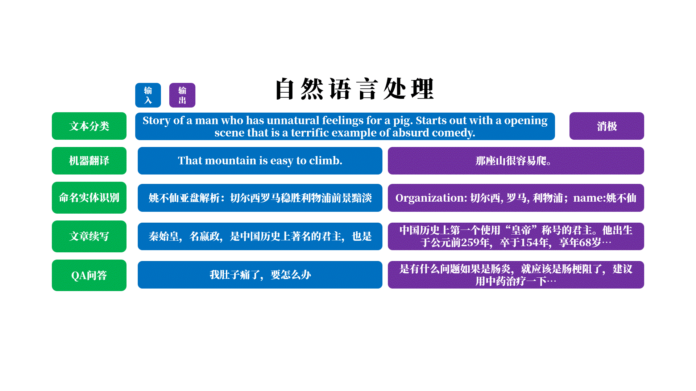
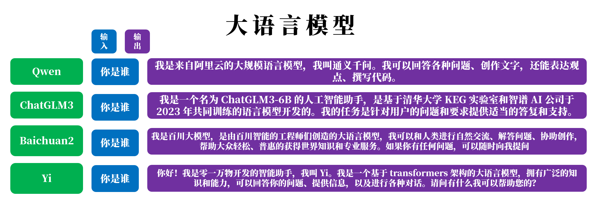
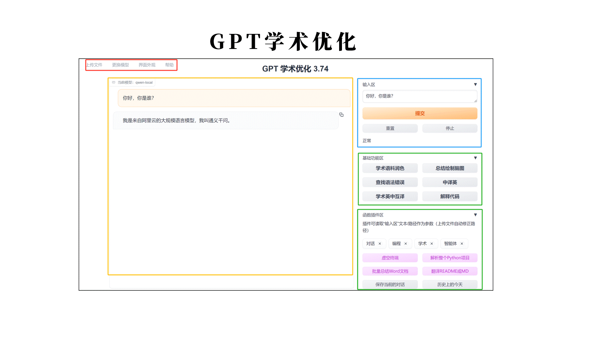

简介
2018年12月《PyTorch 模型训练实用教程》面世距今5年多仍在发光发热，且备受欢迎已超7.2K stars。为了满足读者进一步需求和紧跟技术发展潮流，第二版应运而生。
时隔5年，历时4年，耗时2年的《Pytorch实用教程》第二版完成了。在第一版的精华之上，增加了丰富详实的深度学习应用案例和推理部署框架，使本书更系统性的涵盖深度学习工程师所涉及的知识面。如人工智能技术发展一浪接一浪，《Pytorch实用教程》第二版不是结束，而是开始，开启新的技术、新的领域、新的篇章，希望未来能继续与大家一起在人工智能技术里学习、进步。

本书以基础概念为基石，计算机视觉、自然语言处理和大语言模型为核心，推理部署框架为桥梁，皆在为读者提供面向项目落地的代码工程与理论讲解。本书整体分三部分，上篇：入门，中篇：应用，下篇：落地。
上篇
PyTorch基础。针对刚入门、非科班、本科生，提供PyTorch介绍，讲解开发环境的搭建，介绍PyTorch的数据、模型、优化、可视化等核心模块，最后利用所讲解的PyTorch知识点构建一套自己的代码结构，为后续的应用打下基础。
中篇
产业应用。经过上篇，磨了一把好刀，接下来就用它在各领域上大显身手。将会讲解三个主题，分别是计算机视觉（Computer Vision）、自然语言处理（Natural Language Processing）和大语言模型（Large Language Model）。
在CV章节，包括主流的任务，有图像分类、图像分割、目标检测、目标跟踪、GAN生成、Diffusion生成、图像描述和图像检索八大任务。

在NLP章节，包括RNN、LSTM、Transformer、BERT和GPT模型详解与应用，应用的任务有文本分类、机器翻译、命名体识别、QA问答和文章生成五大任务。

在LLM章节，包括4个LLM部署与代码分析和一个LLM行业应用——GPT Academic（GPT 学术优化），LLM包括国内开源的四大主流模型，Qwen、ChatGLM、Baichuan和Yi。


下篇
工业落地。有了工具，有了场景，接下来就要让它产生价值，变成可用的、好用的算法服务。因此，从pytorch这样一个训练框架、重框架中剥离出来进行部署、加速、量化是常见的方法。本章将介绍ONNX和TensorRT的原理与使用，同时借助TensorRT详细分析模型量化概念、PTQ和QAT量化实战与原理。
相信经过上、中、下篇的学习，可以帮助入门的同学少走很多弯路，快速掌握PyTorch，具备独当一面的能力，能依据实际场景选择算法模型，可以将模型部署应用，形成闭环，全流程打通。
本书亮点
结构清晰：全书分为三部分：上篇（入门）、中篇（应用）、下篇（落地），逐步引导读者深入学习。
理论与实践结合：不仅提供理论讲解，还通过丰富的项目案例，让读者能够将理论应用于实践。
实战案例丰富：提供了计算机视觉、自然语言处理和大语言模型等多个领域的实战案例。
系统性覆盖：涵盖Pytorch基础、计算机视觉基础任务、自然语言处理基础任务、大语言模型基础、推理部署框架。
适用性广：适合AI自学者、AI产品经理、在校学生以及跨领域人士阅读，满足不同背景和需求的读者。
本书内容及结构
本书包含十二章，分三篇。分别是pytorch基础、项目应用和工业落地。
第一章 PyTorch 简介与安装，详细介绍Pytorch环境安装，包括Anaconda、Pycharm、CUDA&cuDNN和Jupyter Notebook。
第二章 PyTorch 核心模块，介绍代码结构，Tensor与自动求导机制。
第三章 PyTorch 数据模块，介绍Dataset、DataLoader、transforms库和应用案例。
第四章 PyTorch 模型模块，介绍Module、Parameter、Module容器、Hook等。
第五章 PyTorch 优化模块，介绍二十一个损失函数，十三个优化器，十四个学习率调整方法。
第六章 PyTorch 可视化模块，介绍Tensorboard、混淆矩阵、CAM、Grad-CAM、Grad-CAM++等。
第七章 PyTorch 小技巧汇总，介绍模型保存、加载、GPT使用、TorchMetrics、Albumentation、TorchEnsemble等。
第八章 PyTorch 图像项目案例之图像分类，介绍肺炎X光片二分类，AutoAug、推理性能分析等。
第八章 PyTorch 图像项目案例之图像分割，介绍脑部MRI肿瘤分割，涉及smp工具库、分割评价指标分析等。
第八章 PyTorch 图像项目案例之目标检测，近1万字介绍YOLOv5在无人机场景的目标检测，包含yolov5框架代码剖析、训练机制剖析、消融实验等。
第八章 PyTorch 图像项目案例之目标跟踪，近1万字介绍DeepSORT算法流程、匈牙利算法、卡尔曼滤波、源代码深入剖析、代码UML设计、撞线机制等。
第八章 PyTorch 图像项目案例之CycleGAN，介绍GAN、cycleGAN的理论与风格迁移代码实现。
第八章 PyTorch 图像项目案例之DDPM，介绍DDPM、Guided Diffusion Model、classifier-base 、classifier-free、去噪代码流程等。
第八章 PyTorch 图像项目案例之图像描述，介绍CNN+RNN架构、Clip+GPT架构、clip原理、gpt原理、CLIPCap 代码等。
第八章 PyTorch 图像项目案例之图像检索，近1万字介绍图像检索概念、评价指标、向量检索、Faiss库安装使用、CLIP+Faiss+Flask工程部署等。
第九章 PyTorch NLP项目案例之文本分类，介绍NLP基础、RNN、LSTM、分词、词频、词表、词向量、影评数据分类项目等。
第九章 PyTorch NLP项目案例之机器翻译，介绍seq2seq、transformers、特殊token、强制学习、三种注意力机制、中英互译项目等。
第九章 PyTorch NLP项目案例之命名体识别，介绍BERT原理与结构、命名体识别的表示、cluener数据集及其BERT训练项目等。
第九章 PyTorch NLP项目案例之文章续写，介绍gpt1， gpt2， gpt3， Instruct GPT四篇论文及对比，介绍GPT2训练代码框架，数据准备等
第九章 PyTorch NLP项目案例之QA问答，介绍gpt1， gpt2， gpt3， Instruct GPT四篇论文及对比，介绍GPT2训练代码框架，数据准备等
第十章 大语言模型安装与应用，介绍Qwen、ChatGLM3、Baichuan2、Yi的安装与应用，介绍GPT Academic（GPT 学术优化工具）的安装与项目剖析等。
第十一章 ONNX使用，介绍ONNX、onnxruntime、ONNX量化、混合精度、计算图优化、线程管理、IO binding、耗时分析等。
第十二章 TensorRT使用，介绍TensorRT安装、工作流原理、cuda-python库、trtexec使用、nsight system工具、polygraphy工具、TRT API、模型量化理论、PTQ量化理论与实践、QAT量化与实践，python工程化等。
阅读建议
为了更好使用本书，读者需要具备python基础，了解人工智能、深度学习概念。
本着Talk is cheap, show me the code 的精神，本书配套了丰富详细的代码，建议先跑通代码，再看理论基础。
深度学习是一门工程性质极强的学科，建议基于本项目提供的代码，在自己的任务、其他数据集上进行实践。
项目代码
https://github.com/TingsongYu/PyTorch-Tutorial-2nd
有任何想法和建议，欢迎联系：yts3221@126.com